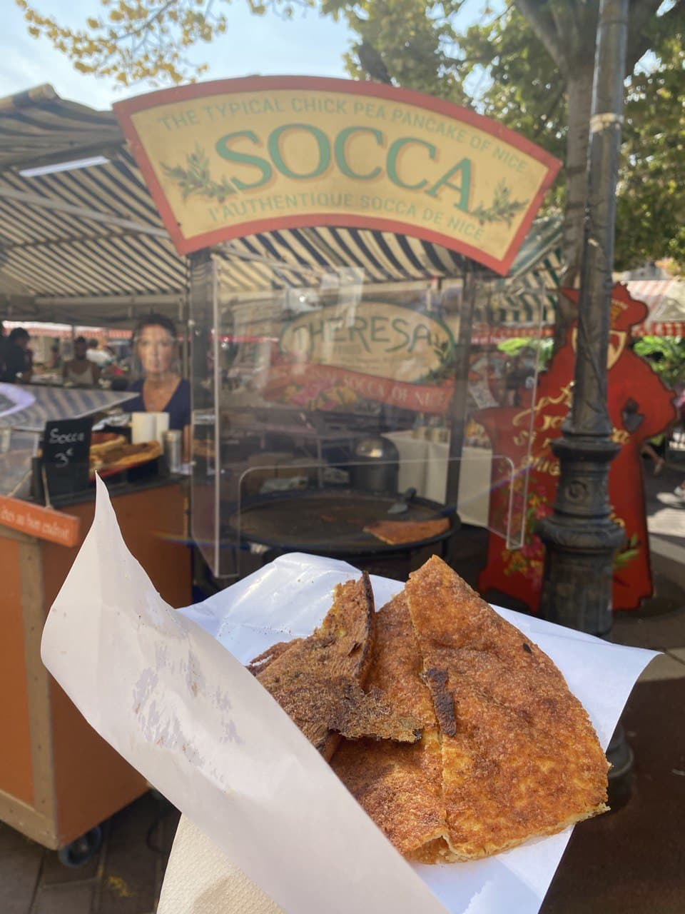
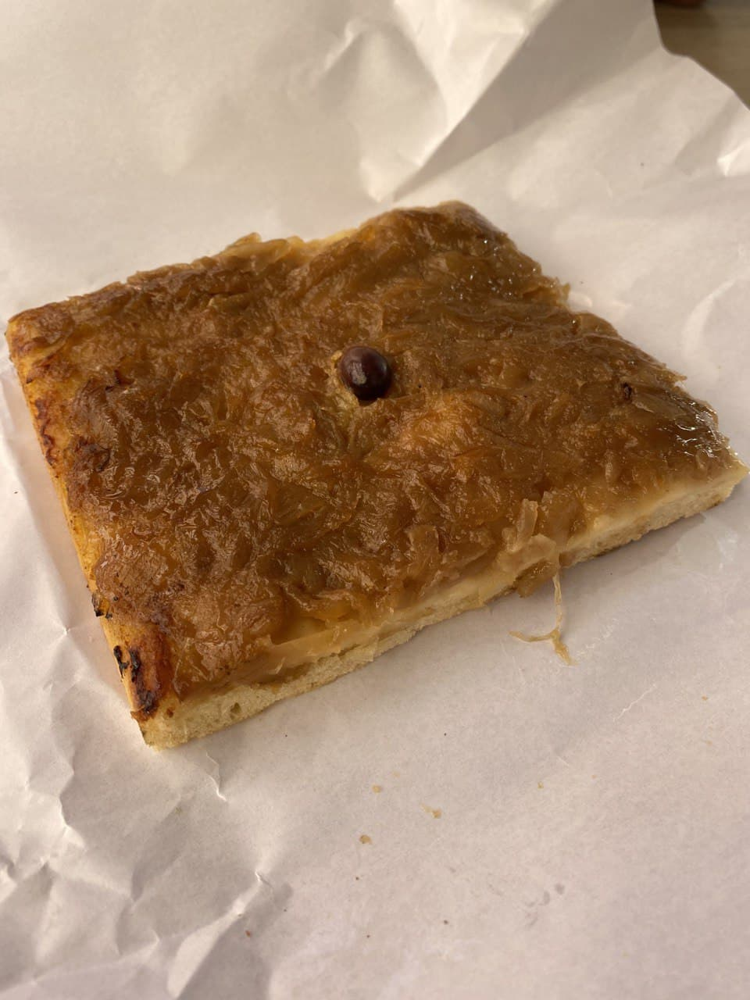
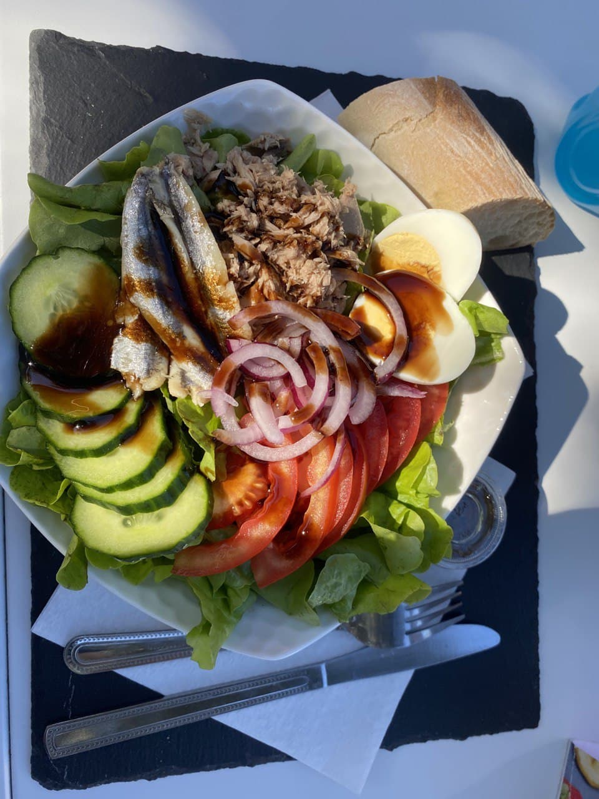
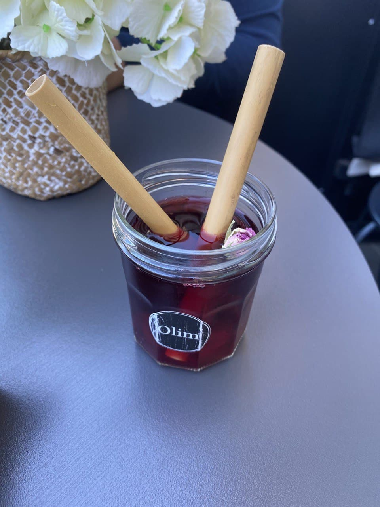
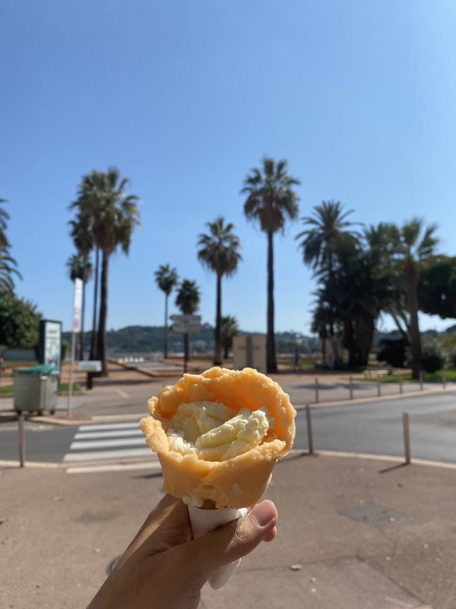
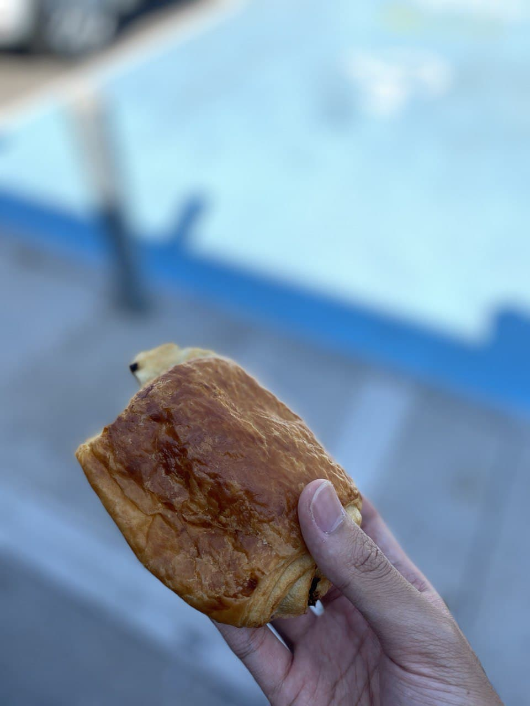
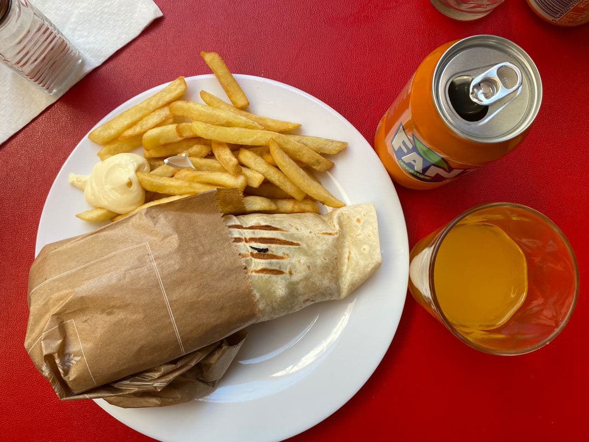
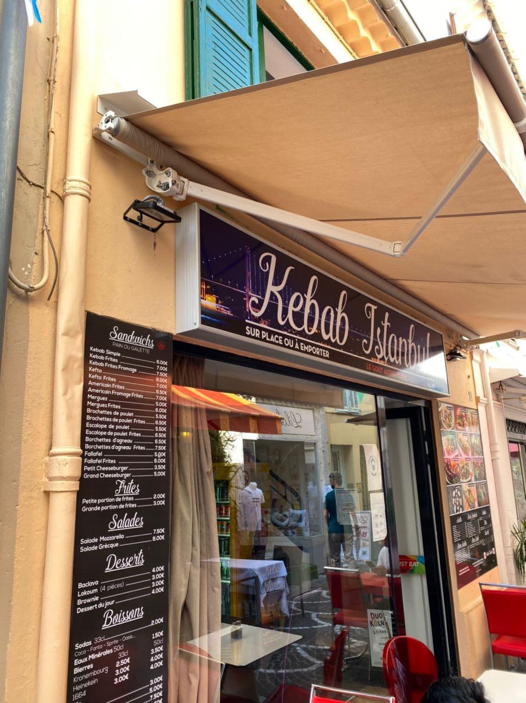
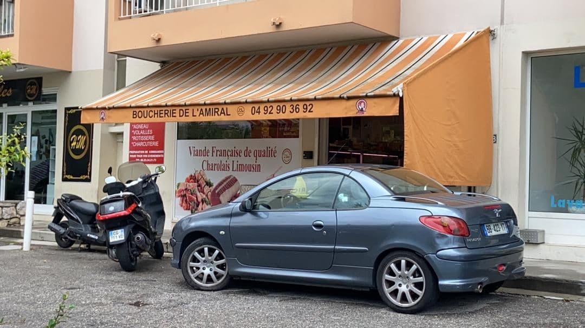

Nous avons goûté un peu de nouveau plat ici en France. Par exemple, socca, salade niçoise, pissaladière etc.
Ce sont nouveaux pour nous car on ne peut pas les trouver en Malaisie (notre pays de naissance). Mais franchement, ils sont délicieux!

Socca - L'une des spécialités niçoises

Classique de Nice - Pissaladière

Bonne pour la santé - La Salade Niçoise! Parmentier avec la soupe de carottes

Le jus de fleur, très rafraîchissant!

Une glace artisanal avec influence d'Italie La glace, c'est la vie!

Quand vous allez au boulangerie, n'oubliez jamais le pain au chocolat! (Attention! Si vous êtes dans la région d'occitanie, il s'appelle chocolatine!)
Les nourritures halal
Les malaisiens sont généralement des musulmans, donc trouver les nourritures sont importantes pour nous. En France, on peut trouver les nourritures halal aiséments! Il y a davantage de bistros, boucheries et même les restaurants halals!

Kebab Galette, notre préféré!

Le meilleur bistro halal chez nous, Kebab Istanbul à Antibes

Où on achete les viandes, Boucherie L'Amiral Même au resto U, on peut toujours trouver un menu halal!